Talks
As a Recovering Data Scientist & MLOps Evangelist, I love sharing my passion with audiences who are interested in the world of Data/ML/AI. Here are the topics I’m interested at speaking about:
- Technical talks that cover MLOps, DataOps, and the art of building data-intensive software applications.
- Business talks on Data & (Gen) AI Strategy, data-driven decisions and how to drive ROI for data projects
- Case studies on our experience in architecting, building, deploying and operationalising Data, ML and AI projects.
Invite me to speak
I’m always grateful for the opportunity to share insights and contribute to meaningful conversations. Due to time constraints, I’m selective about the events I take on. If you’re reaching out with a speaking request, please include the following in your message to help me assess availability and fit:
- Event details – Name, date, location (or virtual)
- Audience – Estimated size, industry, technical level, and familiarity with AI
- Topic – What you’d like me to cover or contribute to
- Budget – Honorarium or speaker fee, if applicable
Thank you for considering me for your event — I look forward to hearing more.
Recent Speaking Engagements
AI Agents in Action: Lessons from Real-World Deployment
Keynote at ML Africa 2025 on building and scaling production-ready AI agents
27 March 2025
Format: Keynote
Host: ML Africa Conference
Audience: 50+ senior leaders attending the prestigious conference
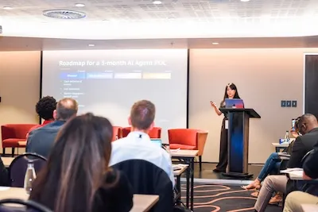
View Slides
Watch Recording
At the 6th annual ML Africa Conference, Merelda delivered a keynote unpacking the real-world challenges and strategies behind building and deploying AI agents. The talk clarified the often-confused distinction between AI automation, workflows, and true AI agents, giving the audience a clear lens to evaluate which approach best fits their use case.
She then walked through the five most common reasons AI agent projects fail, sharing lessons learned from the field and pragmatic ways to avoid these pitfalls. Finally, Merelda introduced a 3-month roadmap and checklist to help teams ship production-ready agents quickly — without over-engineering or stalling.
The session was praised for its no-fluff delivery, technical clarity, and relevance to both startups and enterprises scaling AI-powered systems.
From Impossible to Inevitable: Unlocking New Business Models with AI
Panel discussion at The Open Letter’s startup event on AI adoption in African markets
27 March 2025
Format: Panel Discussion
Host: The Open Letter
Audience: 150+ Startup founders and business leaders
At The Open Letter’s exclusive startup event, Merelda joined fellow tech leaders to unpack how AI is revolutionizing the startup landscape in South Africa. The panel explored how emerging AI technologies are dismantling traditional barriers to scale, enabling local startups to compete globally with reduced capital requirements.
The interactive discussion brought together diverse perspectives to examine:
- The transformative impact of AI on traditional business models and revenue streams
- Battle-tested strategies for startups to adopt AI effectively while managing risks
- Success stories and lessons learned from African startups leveraging AI to accelerate growth
The session provided actionable insights for founders looking to harness AI’s potential while navigating the unique challenges of the African market.
AI Unboxed: Demystifying AI for Strategic Decision Making
Keynote at Schauenburg International’s leadership offsite on AI adoption strategy
8 October 2024
Format: Keynote
Host: Schauenburg International GmbH
Audience: 60+ global senior executives
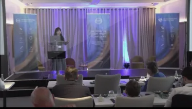
Watch Recording
View presentation materials
In this session, Merelda addressed common misconceptions about AI technologies, particularly the confusion between Predictive AI and Generative AI, and provided clarity on when to use each. Predictive AI analyzes historical data to forecast future outcomes, while Generative AI creates new content, from text to images, rapidly. Understanding the differences between these technologies is crucial for making informed, strategic decisions.
She introduced the three archetypes of AI adoption: Takers, Shapers, and Makers, inviting the audience to identify which role their organisation plays. Based on these archetypes, she presented industry-specific examples relevant to Schauenburg’s portfolio, showcasing how Predictive AI can drive operational efficiency (e.g., predicting equipment maintenance), while Generative AI enhances customer interactions (e.g., generating technical documents).
The session received a 10/10 rating from attendees for its practical insights and immediate applicability.
The Future of FinTech: Leveraging Generative AI
Panel discussion at FinTech Summit Africa 2024
26 June 2024
Format: Panel Discussion
Host: FinTech Summit Africa
Audience: 200+ fintech leaders and innovators
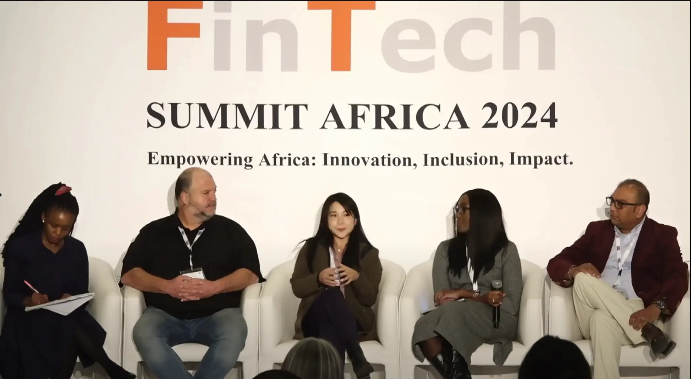
Watch Recording
At the FinTech Summit Africa, Merelda shared practical insights on implementing Generative AI in financial services. She highlighted three key areas where African FinTechs are seeing immediate impact:
- Document Processing & Verification: How AI is revolutionizing KYC processes and fraud detection
- Automated Customer Service: Real-world examples of AI improving customer experience while reducing costs
- Infrastructure Challenges: Practical strategies for deploying AI solutions in low-resource environments
The discussion sparked meaningful conversations about building inclusive, AI-powered financial services that work for African markets.
Unlocking GenAI’s Potential with AWS
Technical deep-dive for fintech developers and architects
3 April 2024
Format: Technical Workshop
Host: AWS & Melio AI
Audience: 150+ developers and technical leaders
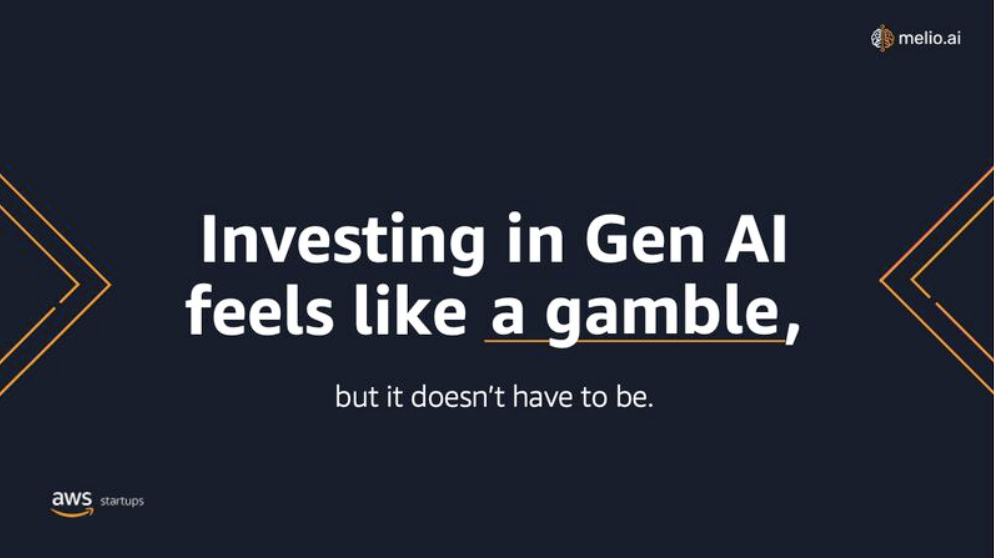
Watch Recording
With over 70% of businesses viewing GenAI as both an opportunity and a risk, this technical session cut through the complexity to deliver practical implementation guidance. The workshop covered:
- AWS GenAI Services Overview: Deep-dive into key services and their optimal use cases
- Architecture Patterns: Reference architectures for common fintech scenarios
- Implementation Guide: Step-by-step walkthrough of building secure, scalable GenAI applications
Participants left with concrete examples and starter templates they could immediately apply to their projects.
Digital Transformation Through AI
Monthly roundtable series by BI Technologies Africa
27 March 2024
Format: Executive Roundtable
Host: BI Technologies Africa
Audience: 30+ digital transformation leaders
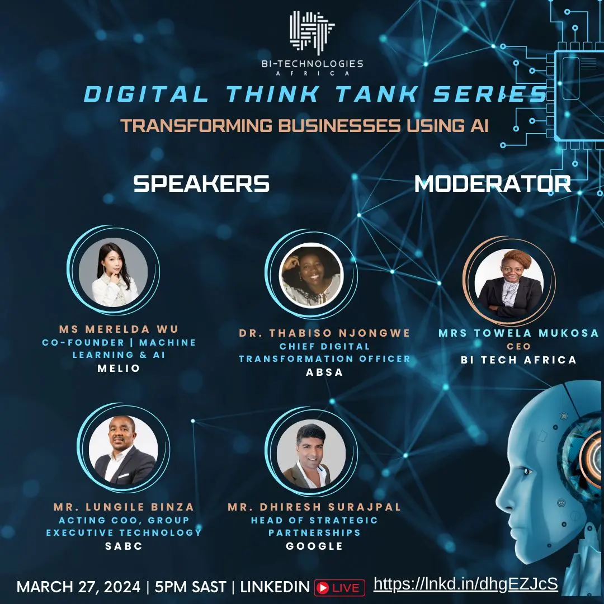
Watch Recording
As part of BI Technologies Africa’s Digital Think Tank series, Merelda led a focused discussion on practical AI implementation strategies. Key topics included:
- Strategic AI Integration: Framework for embedding AI into organizational strategy
- Data Governance: Best practices that enhance rather than hinder AI implementations
- Culture & Change: Building an AI-ready organization and workforce
The interactive format allowed participants to share challenges and collaboratively develop solutions.
How businesses can benefit from enterprise Machine Learning
7 November 2023
Format: Video Interview
Host: What’s Next
Audience: Technology & Business Leaders
A deep dive into how organizations can maximize value from enterprise machine learning platforms. Key topics covered:
- Building and scaling enterprise ML platforms effectively
- Strategies to demonstrate clear ROI from ML investments
- Importance of cross-functional teams in ML development
- Best practices for accelerating delivery while maintaining quality
- Practical tips for data teams to showcase business impact
Technology & Investment Landscape for MAD
11 November 2023
Format: Investor Forum
Host: Mineworks Investment Company
Audience: Investment Leaders
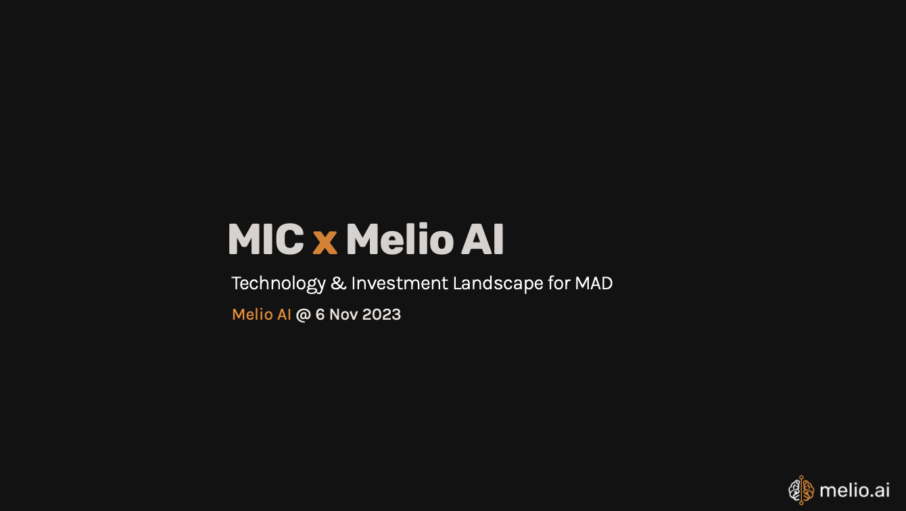
Download Slides
Expert analysis of the Machine Learning, Analytics and Data (MAD) landscape for investors. The presentation covered:
- Global AI trends and South African market context
- Key challenges facing South African enterprises
- Emerging opportunities in data monetization
- Strategic investment considerations in AI/ML
- Growth projections and market dynamics
Building Success with AWS - Lessons Learnt
26 September 2023
Format: Keynote Presentation
Host: AWS Startup Team
Audience: Startup Founders & Leaders
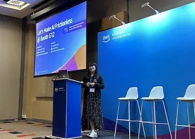
Download Slides
A practical guide sharing Melio AI’s growth journey with AWS. Key insights included:
- Strategic use of AWS services to scale technology and business
- Leveraging AWS startup programs for accelerated growth
- Critical lessons learned building both service and product offerings
- Practical implementation strategies and best practices
Building Enterprise ML Platforms - Challenges & Learnings
26 September 2023
Format: Case Study Presentation
Host: AWS Partner Network
Audience: Enterprise Technology Leaders
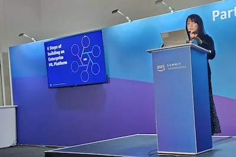
Download Slides
Real-world insights from building enterprise ML platforms that deliver measurable value. The presentation explored:
- Core challenges in enterprise ML platform development
- Key learnings from successful customer implementations
- Six-step methodology for building effective ML platforms
- Best practices for scalable and maintainable solutions
Embracing AI: Reshaping the Landscape of Venture Building
6 July 2023
Format: Keynote & Panel Discussion
Host: The Delta
Audience: Venture Builders & Entrepreneurs
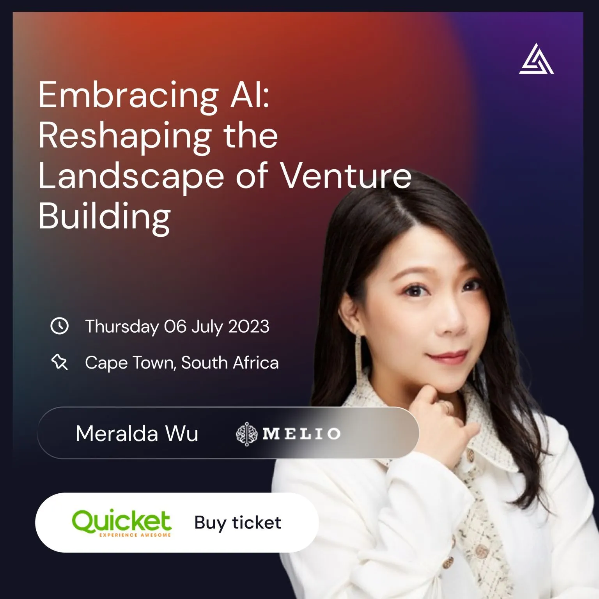
Watch Recording
Strategic insights on AI adoption for venture builders and startups. The presentation included practical guidance on:
- Essential considerations for AI project initiation
- Best practices and common pitfalls to avoid
- Framework for successful AI implementation
- Strategies for sustainable AI adoption
View presentation materials
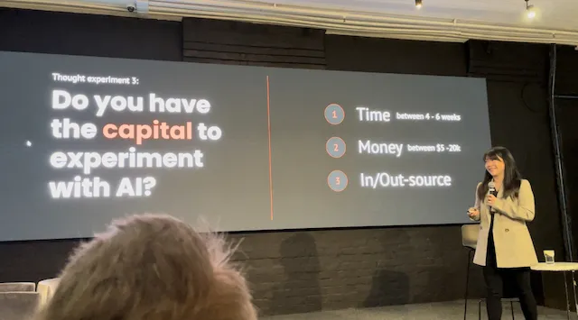 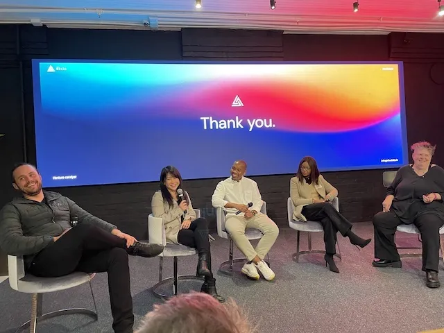Unlocking the potential of AI: Strategies and Tools to Build an AI enabled Business
20 April 2023
Format: Masterclass
Host: Tech Tribe
Audience: 50+ Business Leaders & Entrepreneurs
Merelda was invited to deliver an one-hour masterclass on building an AI-enabled business. The session covered practical approaches for businesses to leverage AI effectively, including:
- Identifying AI opportunities in business operations
- Building cost-effective AI strategies
- Measuring AI initiative impact
- Best practices and pitfall avoidance
From Google Colab to Deployed Endpoints Following MLOps Principles
13 December 2022
Format: Technical Talk
Host: Deep Learning Indaba X
Audience: 100+ ML practitioners and researchers
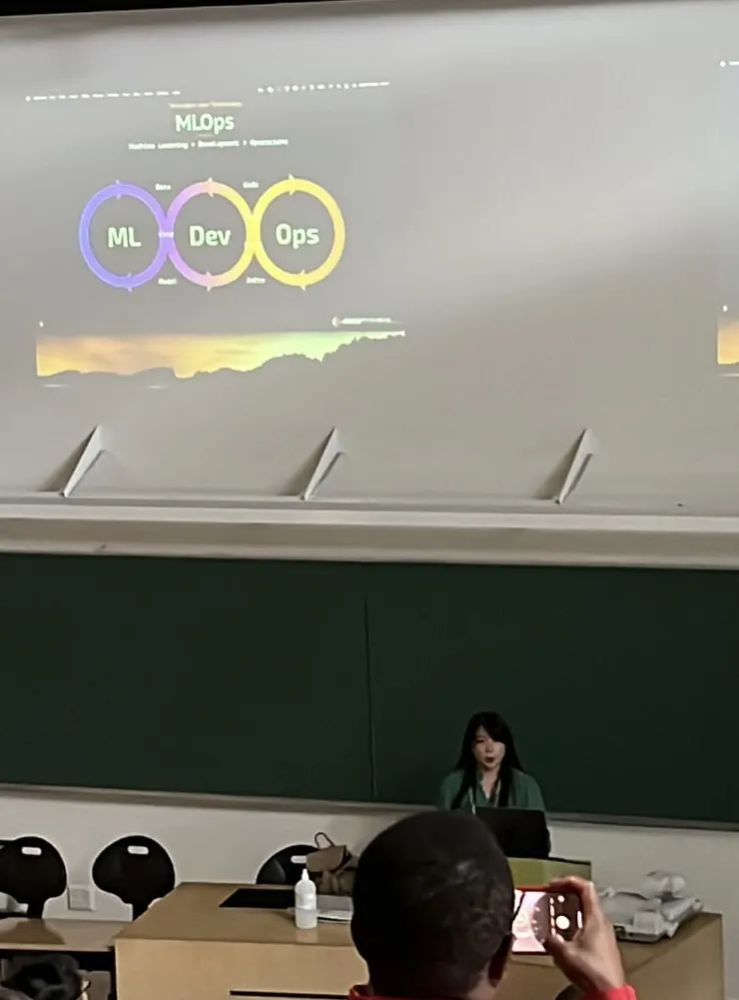
Merelda was invited as an MLOps specialist to the Deep Learning Indaba X conference to present a practical talk on MLOps. The presentation covered:
- Key challenges in modern ML deployment
- Core MLOps principles and best practices:
- Principles over Technology approach
- Convention over Configuration
- Building a practical MLOps stack
- Live demonstration of deploying from Colab to production endpoints
👉 Expand here for the slides
Building Enterprise ML Platforms: Lessons from the Field
Pitch presentation on Highwind, an ML Platform for data practitioners and businesses
13 October 2022
Format: Pitch
Host: World Summit AI
Audience: 2000+ Global AI practitioners and leaders
At World Summit AI, a leading global conference in Amsterdam, Merelda presented practical insights on deploying machine learning models at scale.
The talk explored key challenges and solutions in productionizing ML systems.
Finding Your Path: Data Science Careers & Impact
In-depth discussion on the Data Talk Podcast about building AI companies
7 October 2022
Format: Podcast Interview
Host: Data Talk Podcast
Audience: Data professionals and aspiring data scientists
Having worked on a wide variety of data science projects before embarking on an entrepreneurship journey, Merelda has brought to this episode invaluable knowledge on how to carve your own path as a data scientist and aim to do work that will leave you fulfilled. She touches on:
- Different competencies that make a well-rounded data scientist
- Distinctions between ML Engineering, Data Engineering and Data Science roles
- Building a successful AI company during challenging economic conditions
- Maintaining focus on mission and impact while scaling
AI & The Metaverse: Future Perspectives
Panel discussions on emerging tech trends and opportunities
28 September 2022
Format: Panel Discussions
Host: SA Innovation Summit & Business Day TV
Audience: Business leaders and tech enthusiasts
A series of high-profile discussions on AI’s role in shaping the metaverse and future of technology:
- SA Innovation Summit fireside chat on AI’s potential in the metaverse
- Business Day TV interview on innovation culture and continuous learning
- Insights on Melio AI’s commitment to dedicating 20% time for learning and growth
Business Day TV Interview: Innovation & Learning Culture
Insights on fostering curiosity and continuous learning in tech
28 July 2022
Format: TV Interview
Host: Business Day TV
Audience: Business and technology professionals
A discussion on building innovative tech companies and fostering a culture of continuous learning:
- The importance of curiosity as a core value at Melio AI
- Why continuous learning is critical in the fast-moving tech industry
- How Melio AI dedicates 20% of time for learning and development
- Encouraging engineers to push boundaries and innovate
Brainstorm Magazine: MLOps Deep Dive
Expert perspectives on machine learning operations
28 July 2022
Format: Magazine Interview
Host: Brainstorm Magazine
Audience: Tech leaders and ML practitioners
An in-depth opinion piece exploring the critical role of MLOps in modern machine learning systems and its implementation challenges.
MLOps: From Theory to Practice
Industry insights on operationalizing machine learning
21 July 2022
Format: Panel Discussion
Host: Multichoice
Audience: 200+ Enterprise tech leaders and ML practitioners
Multichoice is a Africa’s leading entertainment company. I was invited as a machine learning expert to talk about the two things that I’m the most passionate about: MLOps & StartUp 🌟
Here are some of the topics we talked about for the startup panel:
⏩ Access to funding in SA, JHB vs. CT as a startup hub, how to attract and retain talent, typical (or atypical) day running a startup.
Here are some of the topics we talked about for the MLOps panel:
⏩ What really is MLOps, common pitfalls, how to convince businesses to adopt it, how to balance explainability & testing vs. delivering
concrete value, and where do we even start?
Talk Data to Me
Discussing MLOps challenges and cloud-native solutions
27 June 2022
Format: Podcast
Host: Talk Data to Me
Audience: Data practitioners and tech leaders
We discussed data science project failures, MLOps implementation challenges, and cloud-native solutions. Key topics included aligning business and technology goals, practical tips for model deployment, and the strategic importance of Kubernetes in ML systems.
Cloud Native Computing Johannesburg
How to think Cloud-Native for your next Data project
Format: Panel Discussion
Host: Cloud Native Computing Johannesburg
Audience: Cloud and data practitioners
Hosted a panel discussion exploring how cloud-native computing transforms data-centric applications. Featured cloud-native specialist Harry Lee and data specialist Archana Arakkal discussing ecosystem convergence and practical implementation strategies.
Brainstorm Magazine
Building an AI Ecosystem in Africa
7 October 2020
Format: Magazine Interview
Host: Brainstorm Magazine
Audience: Technology and business leaders
Featured as an AI expert discussing Africa’s AI forum development. Shared insights on AI education, policy formation, private sector collaboration, and Africa’s unique position in technology adoption.
AI Expo Africa
Bridging the Last-Mile Deployment Problem with MLOps
4 September 2020
Format: Conference Talk
Host: AI Expo Africa
Audience: AI practitioners and business leaders

Presented strategies for scaling AI from experimentation to production, focusing on MLOps principles and practical deployment approaches. Addressed common deployment challenges and solutions for enterprise AI teams.
GirlCode Women Month Event
Women in Tech Leadership
12 August 2020
Format: Speaker Session
Host: GirlCode
Audience: Women in technology
Shared experiences and insights as a Women in Tech and Tech Founder, inspiring the next generation of women leaders in technology.
Cloud Native Computing Johannesburg
Infrastructure-backed Data Science with Kubeflow
Format: Technical Talk
Host: Cloud Native Computing Johannesburg & Google Cloud User Group
Audience: Data scientists and infrastructure engineers
Demonstrated how to integrate infrastructure considerations into data science workflows using Kubeflow, bridging the gap between data science experimentation and production deployment.
R-Ladies Johannesburg
How to Talk to Business as a Data Scientist
Format: Workshop
Host: R-Ladies Johannesburg
Audience: Data scientists and analysts
Presented practical strategies for managing business expectations in data science projects, addressing common challenges like scope creep, misaligned expectations, and technical communication.